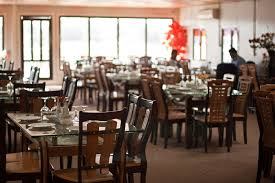
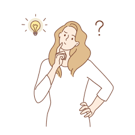
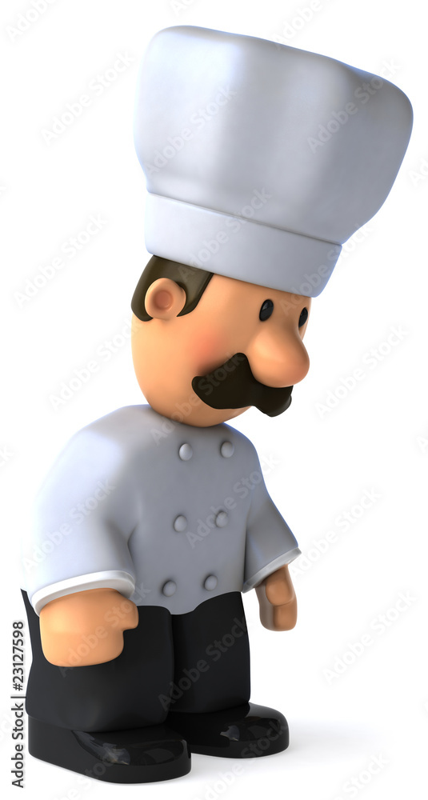

voce tem um restaurante e hoje so que os clientes não pedem pelo nome mas sim fazendo mimicas porque eles faziam isso nesse dia de hoje ca cidade deles, voce esta pronto?

cliente: eu quero massa com molho de tomate e carne moida. qual o nome da comida que ele quer?
cliente: eu quero arroz com feijo mas com um animal morto que é depenado e fica gostoso quando mergulhado em fritura. qual o nome da comida que ele quer?
cliente: eu quero uma coisa simples uma fruta vermelha com poca agua. qual o nome da comida que ele quer?

PARABENS!!!!!!!!! seus clientes ficaram todos satistesfeitos com sua copetencia

voce FALHOU como cozinehiro